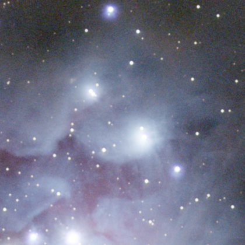
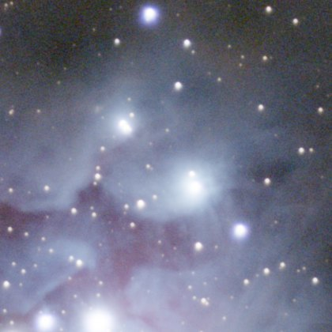
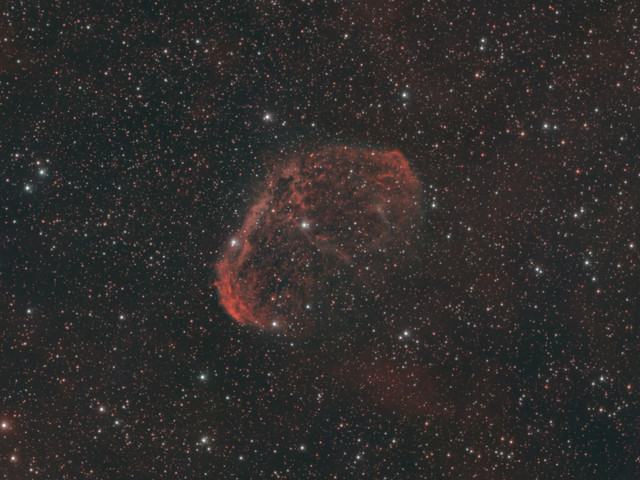
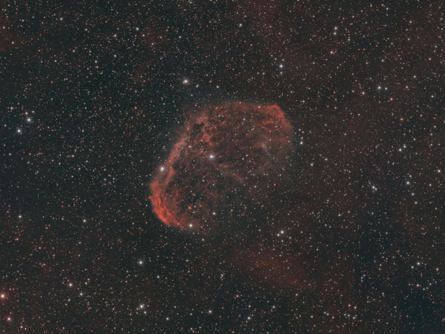
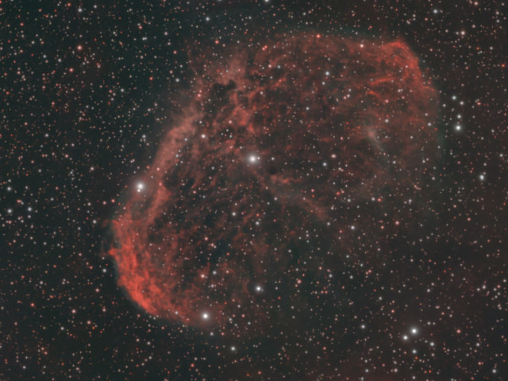

Image linéaire
Outil Sharpen
Étoiles plus fines et plus rondes, détails plus nets (déconvolution).
ExpérimentalCOSMOSharp, le réseau maison de cet outil, est expérimental et déconseillé pour une image finale : des défauts subsistent sur certaines images. L'outil peut aussi tourner avec RC-Astro BlurXTerminator, depuis votre propre installation sous licence. La méthode Classic (Richardson–Lucy) ne l'utilise pas.
Comment s'en servir
- Choisir l'étape dans la séquence, ou ajouter l'outil depuis Tools.
- Le régler, puis Preview : l'étape est calculée sans être appliquée.
- Apply garde le résultat ; sinon changer les réglages et relancer Preview.
Réglages
- AI / Classic
- Le modèle appris, ou une déconvolution classique.
- Star tightening
- De combien les étoiles sont resserrées.
- Nebula sharpening
- De combien le détail de la nébuleuse est affiné.
- Iterations
- Méthode classique : le nombre de passes de déconvolution.
- Noise protection
- Méthode classique : évite d'accentuer le bruit.
Quand s'en servir
Sur l'image linéaire, avant Denoise : la netteté a besoin de la vraie forme des étoiles, bruit compris.
Image
Travaille uniquement sur une image linéaire.
Exemples


sansavec Sharpen

BlurXTerminatorCOSMOSharp v12
BlurXTerminatorCOSMOSharp v12